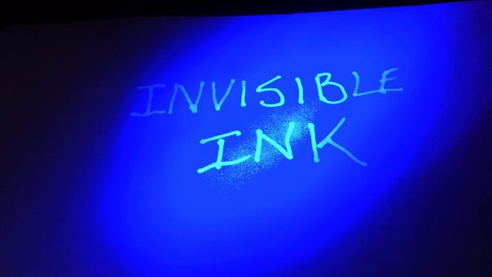

Mi nombre es Alondra Jacqueline Jacinto Sánchez,soy una estudiante de sexto semestre en Ingeniería en Sistemas Computacionales en la Escuela Superior de Cómputo del Instituto Politécnico Nacional. Me apasionan las matemáticas, la programación y la criptografía. Me fascinan los gatitos.
Actualmente estoy cursando el sexto semestre.
Soy beneficiaria de la Beca de Estímulo Institucional de Formación de Investigadores (BEIFI) desde febrero de 2019.
Tengo un promedio general de 9.11
Obtuve un promedio general de 8.11
Titulación en proceso.
La esteganografía estudia todas las posibles técnicas utilizadas para insertar información sensible dentro de otro fichero, denominado "fichero contenedor" (que podría ser un gráfico, un documento o un programa ejecutable), para tratar de conseguir que pueda pasar inadvertida a terceros, y sólo pueda ser recuperada por parte de un usuario legítimo empleando para ello un determinado algoritmo de extracción de la información
Mediante las técnicas esteganográficas no sólo se modifica el contenido de la información, sino que también se intenta ocultar su propia existencia, por lo que podríamos considerarlas como unas técnicas de "camuflaje" de la información.
Desde la más remota antigüedad se han venido empleando distintas técnicas esteganográficas para ocultar la información, como podrín ser las tintas invisibles: así, por ejemplo, en la época de los griegos y de los romanos se empleaba el jugo de limón para escribir información sensible en papiros, de modo que esta tinta sólo se mostraba al someter el documento al calor, pasando inadvertida para aquellos que desconocín esta técnica de "camuflaje".
En el año 1499 Trithemius publicó el que se considera como primer libro sobre Esteganografía. Posteriormente, ya durante la Segunda Guerra Mundial, los alemanes utilizaban micro puntos para ocultar información dentro de documentos impresos, haciéndolos pasar por signos de puntiación.

{kind=link}
{kind=link}
{kind=link}